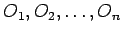
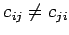
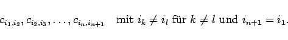

Inhalt Index DeskTop Bronstein

 Optimierung Lineare Optimierung Spezielle lineare Optimierungsprobleme
Optimierung Lineare Optimierung Spezielle lineare Optimierungsprobleme


Gegeben sind n Orte . Um von Oi nach Oj zu gelangen, muß ein Reisender die Entfernung cij zurücklegen. Dabei kann  möglich sein.
Es ist eine kürzeste Reiseroute so zu wählen, daß ein Reisender jeden Ort genau einmal besucht und am Ende zum Ausgangsort zurückkehrt.
Wie beim Zuordnungsproblem ist wiederum in jeder Zeile und jeder Spalte der Entfernungsmatrix  genau ein Element auszuwählen, so daß die Gesamtsumme der ausgewählten Elemente minimal wird. Allerdings wird die numerische Lösung des Rundreiseproblems beträchtlich durch die Einschränkung erschwert, daß eine Anordnung der markierten Elemente cij in folgender Form möglich sein muß:
genau ein Element auszuwählen, so daß die Gesamtsumme der ausgewählten Elemente minimal wird. Allerdings wird die numerische Lösung des Rundreiseproblems beträchtlich durch die Einschränkung erschwert, daß eine Anordnung der markierten Elemente cij in folgender Form möglich sein muß:
|  | (18.30) |
Das Rundreiseproblem kann durch die Anwendung von Verzweigungsverfahren (branch and bound) gelöst werden.